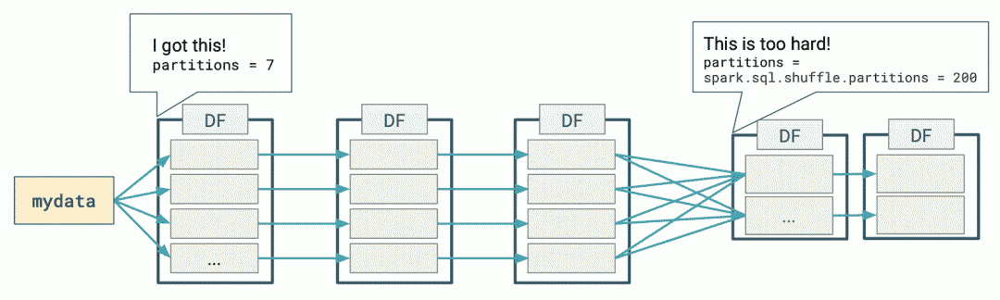
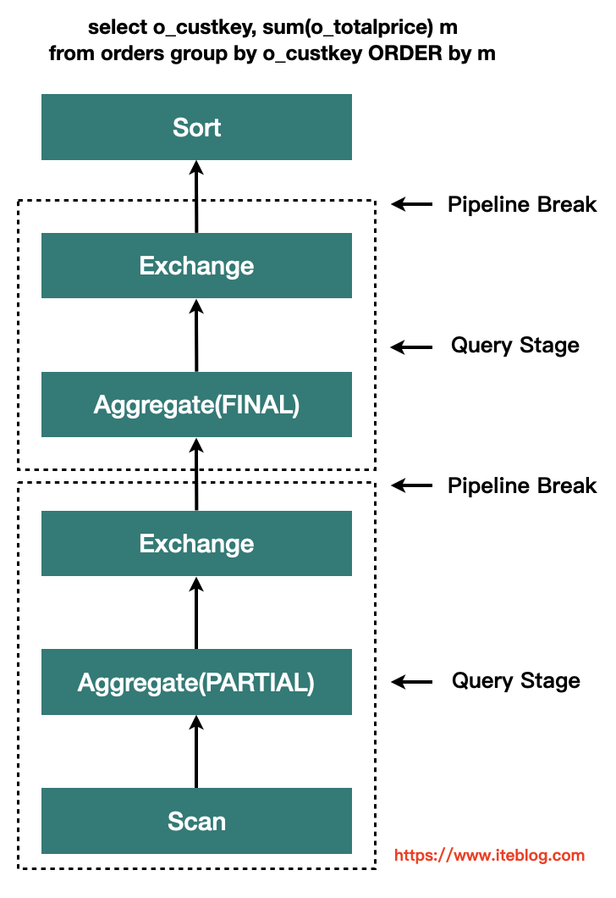
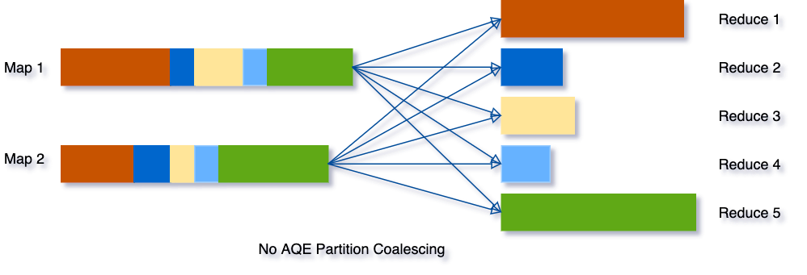
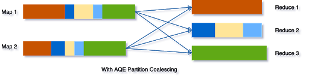
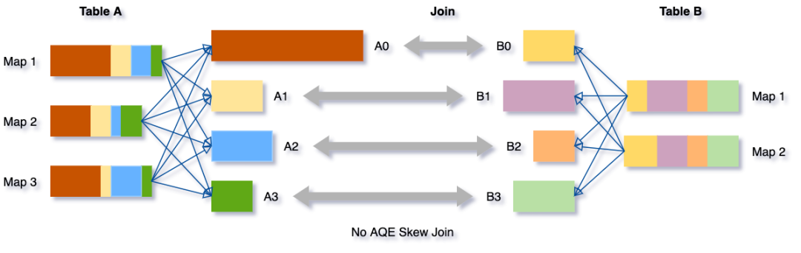
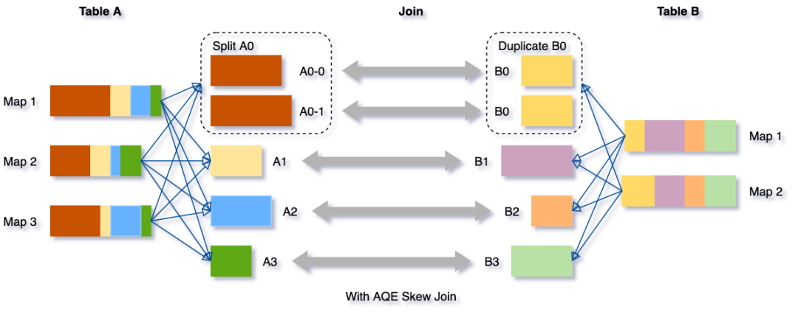
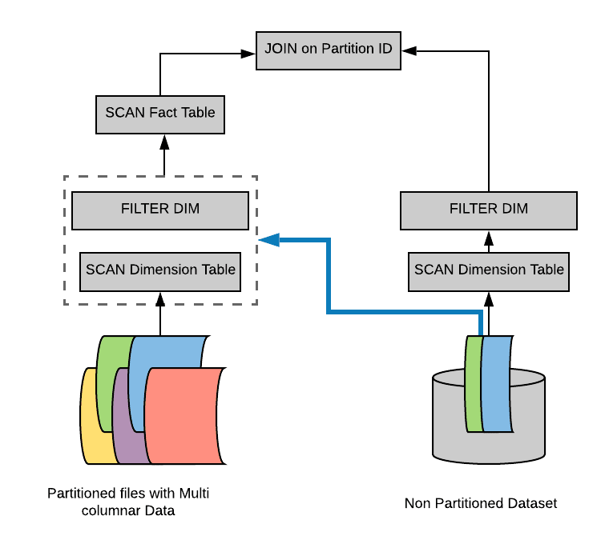
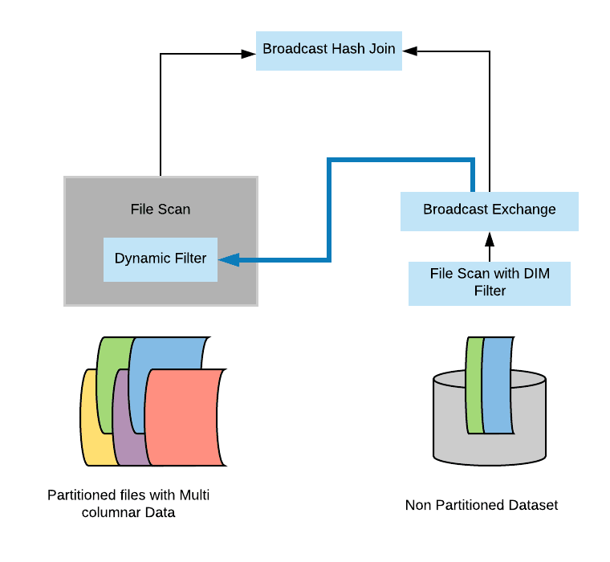

Spark SQL
http://spark.apache.org/docs/latest/sql-programming-guide.html
DataFrame
Koalas：基于 Spark DataFrame 实现的分布式 Pandas DataFrame，已经被集成到 Spark 3.x 中。
SQL语法
辅助语句
refresh
REFRESH is used to invalidate and refresh all the cached data (and the associated metadata) for all Datasets that contains the given data source path. Path matching is by prefix, i.e. “/” would invalidate everything that is cached.
df = spark.read.format("hudi").load(basePath+"/*/*")
df.createOrReplaceTempView("track_log")
# 刷新表的元数据和data
spark.sql("refresh table mytable")
Hive
自定义数据源
DataSource V1与V2
Spark 2.3以前数据源相关的API一般叫做V1 API，它以RDD为基础，向上扩展schema信息，形成DataFrame。
之后的版本则是另一种实现思路，直接基于新的接口在DataFrame的思路上提供数据。
在DataFrameReader中，会先找 V2 实现，找不到则会再找 V1 实现；
DataSource.lookupDataSourceV2(source, sparkSession.sessionState.conf)
.map {...}
.getOrElse(loadV1Source(paths: _*))
V1自定义
关键点:
DataSourceRegister，标识是数据源服务类，Spark会以它来扫描实现类；- RelationProvider，标识是关系型的数据源，可以在Spark SQL中使用；
- BaseRelation，描述DataFrame的Schema信息 ；
- TableScan, 提供无参的数据扫描服务；PrunedScan，提供列裁剪的数据扫描服务；PrunedFilteredScan，提供列裁剪和过滤下推的数据扫描服务。三个scan接口任选其一
流程：
loadV1Source中调用DataSource的apply进行初始化，并调用其resolveRelation创建BaseRelation，然后通过SparkSession创建DataFrame返回；
自定义
- 实现类必须继承DataSourceRegister，否则无法使用简称自动扫描到该实现类
- 实现类需要继承RelationProvider，才能标识为关系型的数据源，在SparkSQL才能使用
- shortName中的简称用于使用时format中指定格式
- 一般在实现中会通过option()传递自定义参数，参数会传入parameters
- 在createRelation需要获取相关信息，创建Schema，这里写死模拟了一下。正常如果是mysql之类的，需要连接数据库获取对应表的字段以及类型信息。
class TestProvider extends DataSourceRegister with RelationProvider {
override def shortName(): String = "test"
override def createRelation(sqlContext: SQLContext,
parameters: Map[String, String]): BaseRelation = {
// 1 通过参数等生成schema信息
val schema = StructType(Seq(
StructField("name", StringType, nullable = true),
StructField("age", IntegerType, nullable = true),
StructField("address", StringType, nullable = true)
))
// 2 创建BaseRelation
TestRelation(schema)(sqlContext.sparkSession)
}
}
case class TestRelation(override val schema: StructType)
(@transient val spark: SparkSession)
extends BaseRelation with PrunedFilteredScan {
override def sqlContext: SQLContext = spark.sqlContext
override def buildScan(requiredColumns: Array[String],
filters: Array[Filter]): RDD[Row] = {
// 构建查询返回RDD，根据requiredColumns进行列裁剪，filters进行谓词下推
spark.createDataFrame(Seq(Stud("a", 10, "aaa"), Stud("b", 20, "bbb")))
.rdd
}
}
case class Stud(name: String, age: Int, address: String)
使用，注意还需要单独配置SPI的发现文件：
import org.apache.spark.sql.SparkSession
object Test2 {
def main(args: Array[String]): Unit = {
val spark: SparkSession = SparkSession.builder()
.master("local")
.getOrCreate()
val df = spark.read.format("xingoo")
.load()
df.select("name")
.filter("age > 15")
.show(false)
}
}
特性
向量化执行和代码生成
具体见向量化介绍
自适应查询执行设计（AQE，Spark 3.0）
下图表示了使用 DataFrames 执行简单的分组计数查询时发生的分布式处理：

Spark 在第一阶段（stage）确定了适当的分区数量，但对于第二阶段，使用默认的分区数 200，即使手动设置分区数，但是也有以下挑战：
- 每个查询都设置这个属性是非常繁琐的；
- 随着业务的变化，之前设置的值可能会过时；
- 这个设置将应用于同一个程序里面的所有 Shuffle 操作中。
基于精确的运行时统计信息进行优化，引入了 Query Stages 的概念，以 Query Stage 为粒度，进行运行时的优化

Query Stage 是由 Shuffle 或 broadcast exchange 划分的，在运行下一个 Query Stage 之前，上一个 Query Stage 的计算需要全部完成，这是进行运行时优化的绝佳时机，因为此时所有分区上的数据统计都是可用的，并且后续操作还没有开始。
参数
spark.sql.adaptive.enabled：是否开启自适应优化，默认true。
自适应调整分区数
Spark 将会把连续的 shuffle partitions 进行合并（coalesce contiguous shuffle partitions）以减少分区数。
相关参数：
spark.sql.adaptive.coalescePartitions.enabled：是否开启自适应分区缩减，默认true；
spark.sql.adaptive.advisoryPartitionSizeInBytes：自适应分区所见的分区的划分大小，默认64MB；
spark.sql.adaptive.coalescePartitions.minPartitionSize：自适应分区所见的分区的最小大小；
spark.sql.adaptive.coalescePartitions.parallelismFirst：根据集群默认并行度，设置分区大小（尽可能利用资源并发），而不是根据advisoryPartitionSizeInBytes，默认true，推荐false；
示例如下图所示：
- 三个非常小的分区，为每个分区启动一个单独的任务将是一种浪费；
- 使用 AQE 之后，Spark 将这三个小分区合并为一个，最终的聚合只需要执行三个任务，而不是五个。


动态将 Sort Merge Joins 转换成 Broadcast Joins
Spark 估计参加 join 的表数据量小于广播大小的阈值（spark.sql.autoBroadcastJoinThreshold）时，其会将 Join 策略调整为 broadcast hash join。但是，很多情况都可能导致这种大小估计出错，比如表的统计信息不准确等（且统计信息只能支持Hive或者文件系统）。
AQE，Spark 可以利用运行时的统计信息动态调整 Join 方式，只要参与 Join 的任何一方的大小小于广播大小的阈值时，即可将 Join 策略调整为 broadcast hash join。进一步将常规的 shuffle 优化为本地化 shuffle来减少网络流量。
参数：
-
spark.sql.adaptive.autoBroadcastJoinThreshold：自适应优化的Broadcast表的阈值，默认同spark.sql.autoBroadcastJoinThreshold，10M； -
spark.sql.adaptive.localShuffleReader.enabled：sort merge转为broadcast join时，是否开启本地读shuffle数据，默认true；
动态将Sort Merge Joins转换为 Shuffled hash join
AQE converts sort-merge join to shuffled hash join when all post shuffle partitions are smaller than a threshold。
参数
spark.sql.adaptive.maxShuffledHashJoinLocalMapThreshold：使用 build local hash map的分区最大大小；
动态优化倾斜的 join
AQE 倾斜 Join 优化从 shuffle 文件统计信息中自动检测到这种倾斜。然后，它将倾斜的分区分割成更小的子分区，这些子分区将分别从另一端连接到相应的分区。
假设表 A join 表B，其中表 A 的分区 A0 里面的数据明显大于其他分区。

将把分区 A0 分成两个子分区，并将每个子分区 join 表 B 的相应分区 B0。

如果没有这个优化，将有四个任务运行 sort merge join，其中一个任务将花费非常长的时间。在此优化之后，将有5个任务运行 join，但每个任务将花费大致相同的时间，从而获得总体更好的性能。
参数：
- spark.sql.adaptive.skewJoin.enabled ：是否启用倾斜 Join 处理；
- spark.sql.adaptive.skewJoin.skewedPartitionFactor：如果一个分区的大小大于这个数乘以分区大小的中值（median partition size），并且也大于
spark.sql.adaptive.skewedPartitionThresholdInBytes这个属性值，那么就认为这个分区是倾斜的。 - spark.sql.adaptive.skewedPartitionThresholdInBytes：判断分区是否倾斜的阈值，默认为 256MB，这个参数的值应该要设置的比 spark.sql.adaptive.advisoryPartitionSizeInBytes 大。
动态分区裁减（Dynamic Partition Pruning，简称 DPP）
开启了动态分区裁减，那么 AQE 将不会被触发。
假设我们有一个具有多个分区的事实表(fact table)，为了方便说明，我们用不同颜色代表不同的分区。另外，我们还有一个比较小的维度表(dimension table)，维度表不是分区表。
Select * from iteblog.Students join iteblog.DailyRoutine where iteblog.DailyRoutine.subject = 'English';
在逻辑计划和物理计划上都有实现：
- 在逻辑计划阶段就知道事实表需要扫描哪些分区：在逻辑计划层面，通过维度表构造出一个过滤子查询，然后在扫描事实表之前加上这个过滤子查询。但是，物理计划执行起来还是比较低效。因为里面有重复的子查询（每个分区都需要获取子查询的结果），需要找出一种方法来消除这个重复的子查询。

- 避免扫描无用的数据：在物理计划层面，在维度表上运行上面构造的过滤，然后将结果广播到事实表端，从而达到避免扫描无用的数据效果。
在 broadcast hash join 中大表进行 build relation 的时候拿到维度表的广播结果(broadcast results)，然后在 build relation 的时候(Scan 前)进行动态过滤，从而达到避免扫描无用的数据效果。具体如下：

如果将spark.sql.optimizer.dynamicPartitionPruning.reuseBroadcastOnly设置为false，那么 DPP 也可以在其他类型的 Join 上运行，比如 SortMergeJoin。在这种情况下，Spark 将估计 DPP 过滤器是否确实提高了查询性能。DPP 可以极大地提高高度选择性查询的性能，
动态分区裁剪适用条件
并不是什么查询都会启用动态裁剪优化的，必须满足以下几个条件：
spark.sql.optimizer.dynamicPartitionPruning.enabled： 参数必须设置为 true，不过这个值默认就是启用的;- 需要裁减的表必须是分区表，而且分区字段必须在 join 的 on 条件里面;
- Join 类型必须是 INNER, LEFT SEMI (左表是分区表), LEFT OUTER (右表是分区表), or RIGHT OUTER (左表是分区表)。
- 满足上面的条件也不一定会触发动态分区裁减，还必须满足
spark.sql.optimizer.dynamicPartitionPruning.useStats和spark.sql.optimizer.dynamicPartitionPruning.fallbackFilterRatio两个参数综合评估出一个进行动态分区裁减是否有益的值，满足了才会进行动态分区裁减。